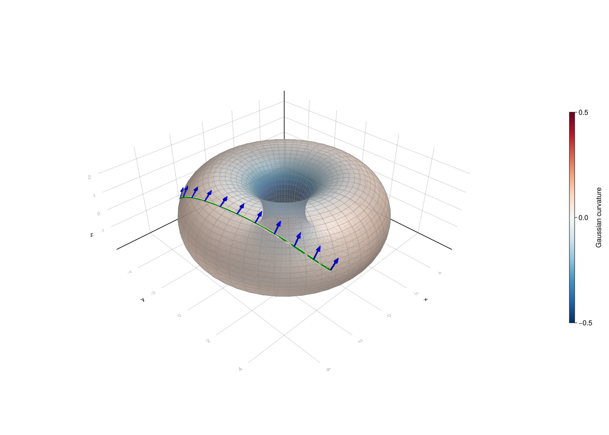
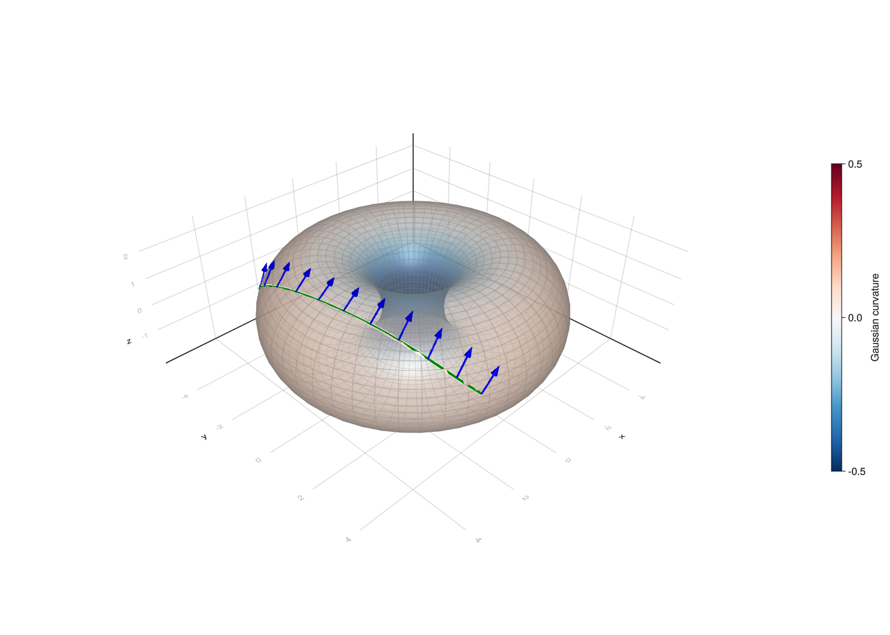
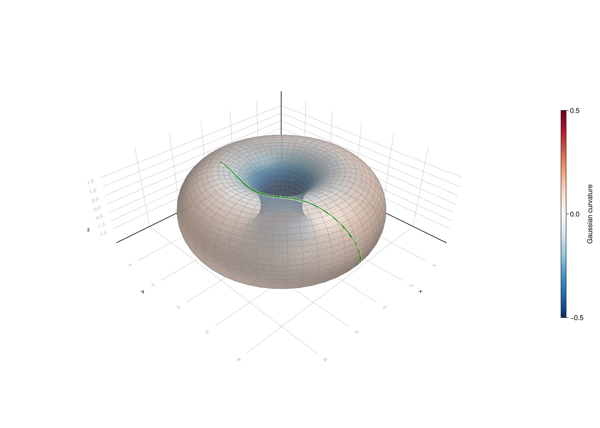
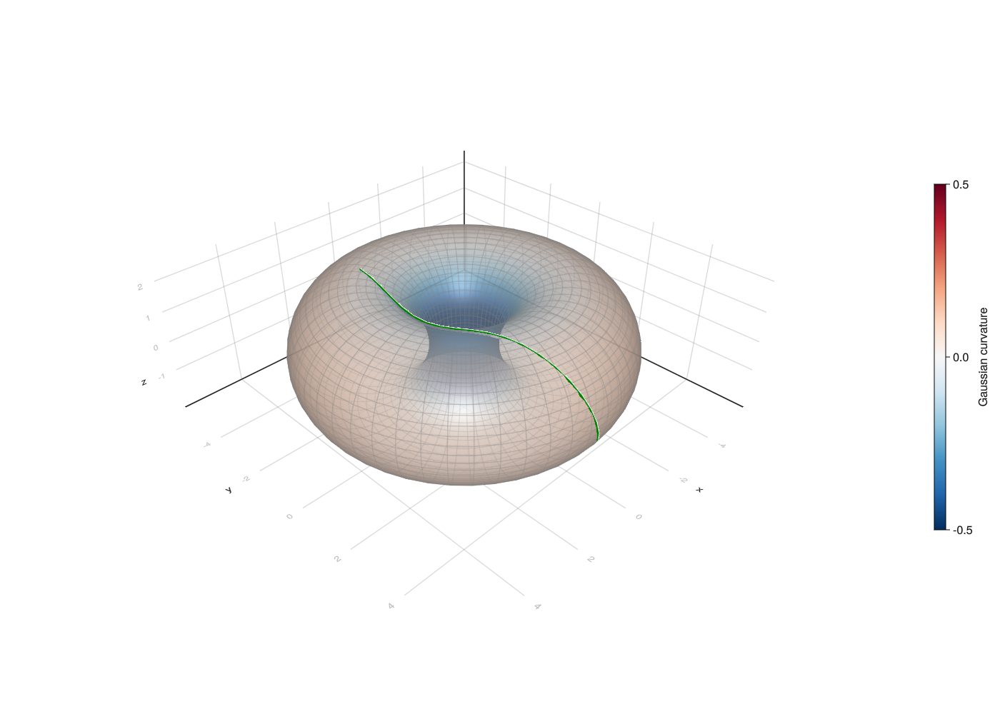
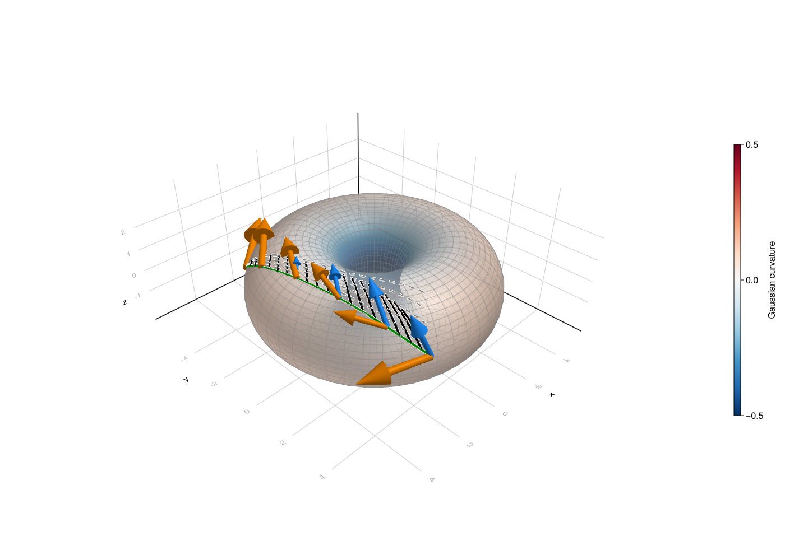
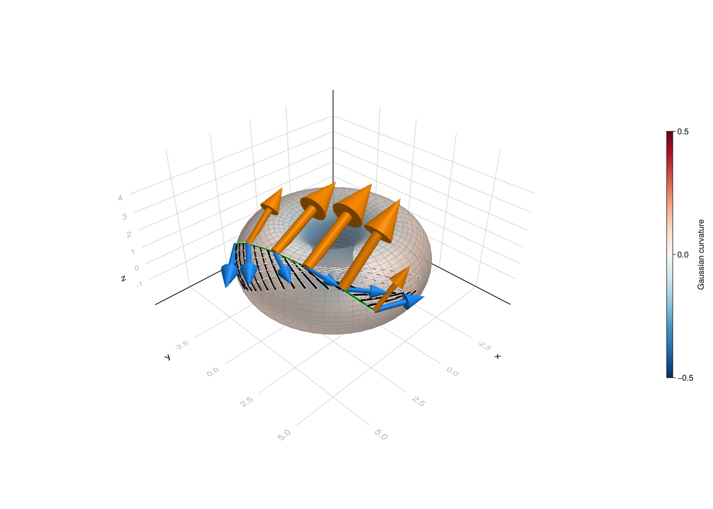
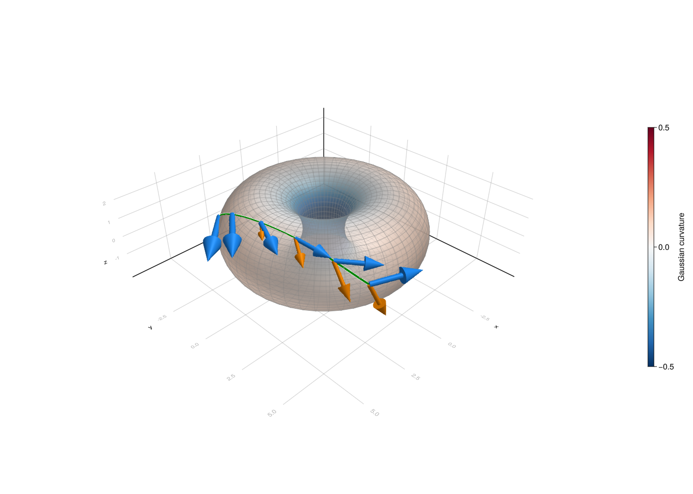
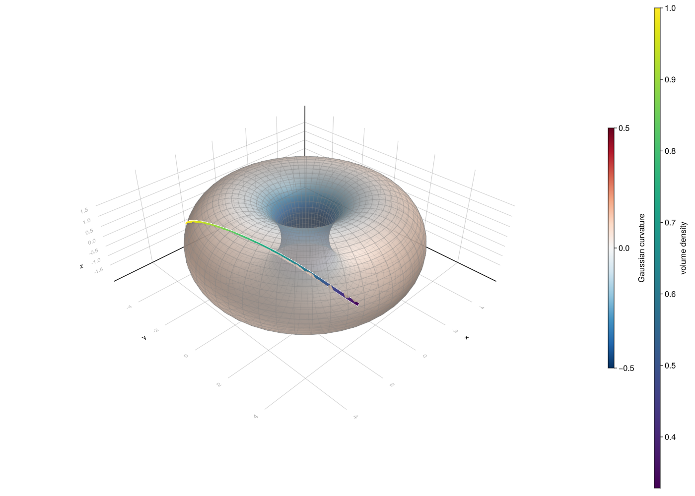
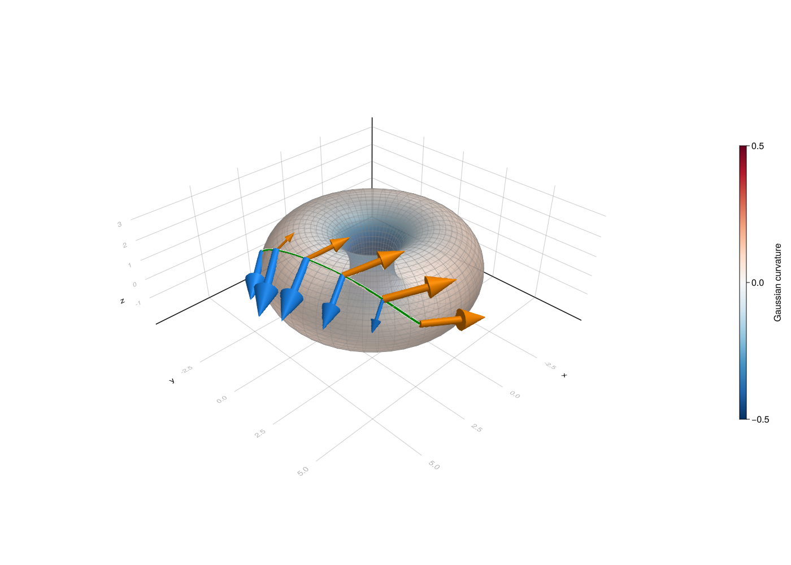

Working in charts
In this tutorial we will learn how to use charts for basic geometric operations like exponential map, logarithmic map and parallel transport.
There are two conceptually different approaches to working on a manifold: working in charts and chart-free representations.
The first one, widespread in differential geometry textbooks, is based on defining an atlas on the manifold and performing computations in selected charts. This approach, while generic, is not ideally suitable in all circumstances. For example, working in charts that do not cover the entire manifold causes issues with having to switch charts when operating on a manifold.
The second one is beneficial if there exists a representation of points and tangent vectors for a manifold which allows for efficient closed-form formulas for standard functions like the exponential map or Riemannian distance in this representation. These computations are then chart-free. Manifolds.jl supports both approaches, although the chart-free approach is the main focus of the library.
In this tutorial we focus on chart-based computation.
using Manifolds, RecursiveArrayTools, OrdinaryDiffEq, DiffEqCallbacks, BoundaryValueDiffEqMIRK
using Manifolds: get_chart_index, solve_chart_parallel_transport_ode, solve_chart_exp_ode, solve_chart_jacobi_field, solve_chart_differential_exp_basepoint, solve_chart_differential_exp_argument, solve_chart_log_bvp, solve_chart_volume_densityThe manifold we consider is the M is the torus in form of the EmbeddedTorus, that is the representation defined as a surface of revolution of a circle of radius 2 around a circle of radius 3. The atlas we will perform computations in is its DefaultTorusAtlas A, consisting of a family of charts indexed by two angles, that specify the base point of the chart.
We will draw geodesics time between 0 and t_end, and then sample the solution at multiples of dt and draw a line connecting sampled points.
M = Manifolds.EmbeddedTorus(3, 2)
A = Manifolds.DefaultTorusAtlas()Manifolds.DefaultTorusAtlas()Setup
We will first set up our plot with an empty torus. param_points are points on the surface of the torus that will be used for basic surface shape in Makie.jl. The torus will be colored according to its Gaussian curvature stored in gcs. We later want to have a color scale that has negative curvature blue, zero curvature white and positive curvature red so gcs_mm is the largest absolute value of the curvature that will be needed to properly set range of curvature values.
In the documentation this tutorial represents a static situation (without interactivity). Makie.jl rendering is turned off.
using GLMakie, Makie
GLMakie.activate!()
"""
torus_figure()
This function generates a simple plot of a torus and returns the new figure containing the plot.
"""
function torus_figure()
fig = Figure(size=(1400, 1000), fontsize=16)
ax = LScene(fig[1, 1], show_axis=true)
ϴs, φs = LinRange(-π, π, 50), LinRange(-π, π, 50)
param_points = [Manifolds._torus_param(M, θ, φ) for θ in ϴs, φ in φs]
X1, Y1, Z1 = [[p[i] for p in param_points] for i in 1:3]
gcs = [gaussian_curvature(M, p) for p in param_points]
gcs_mm = max(abs(minimum(gcs)), abs(maximum(gcs)))
pltobj = surface!(
ax,
X1,
Y1,
Z1;
shading=true,
backlight=1.0f0,
color=gcs,
colormap=Reverse(:RdBu),
colorrange=(-gcs_mm, gcs_mm),
transparency=true,
)
wireframe!(ax, X1, Y1, Z1; transparency=true, color=:gray, linewidth=0.5)
zoom!(ax.scene, cameracontrols(ax.scene), 0.95)
Colorbar(fig[1, 2], pltobj, height=Relative(0.5), label="Gaussian curvature")
return ax, fig
end
function jacobi_figure(geodesic, vector_fields; colors, auxiliary_geodesics = [], support_geodesics = [])
ax, fig = torus_figure()
times = 0.0:0.02:1.0
curve = geodesic.(times)
points = Point3f.(first.(curve))
lines!(ax, points; linewidth=4.0, color=:green, label="geodesic")
for (t, ag) in auxiliary_geodesics
ag_curve = ag.(times)
ag_points = Point3f.(first.(ag_curve))
lines!(ax, ag_points; linewidth=3.0, color=:gray, linestyle=:dash, label="auxiliary geodesic (t = $t)")
end
for sg in support_geodesics
fg_curve = sg.(times)
fg_points = Point3f.(first.(fg_curve))
lines!(ax, fg_points; linewidth=4.0, color=:black, label="geodesic")
end
indices = 1:4:length(vector_fields[1])
for (vectors, color) in zip(vector_fields, colors)
arrows3d!(
ax,
Point3f.(first.(vectors[indices])),
Point3f.(last.(vectors[indices]));
shaftradius=0.05,
color,
)
end
return fig
endjacobi_figure (generic function with 1 method)Values for the geodesic
solve_for is a helper function that solves a parallel transport along geodesic problem on the torus M. p0x is the $(\theta, \varphi)$ parametrization of the point from which we will transport the vector. We first calculate the coordinates in the embedding of p0x and store it as p, and then get the initial chart from atlas A appropriate for starting working at point p. The vector we transport has coordinates Y_transp in the induced tangent space basis of chart i_p0x. The function returns the full solution to the parallel transport problem, containing the sequence of charts that was used and solutions of differential equations computed using OrdinaryDiffEq.
bvp_i is needed later for a different purpose, it is the chart index we will use for solving the logarithmic map boundary value problem in.
Next we solve the vector transport problem solve_for([θₚ, φₚ], [θₓ, φₓ], [θy, φy]), sample the result at the selected time steps and store the result in geo. The solution includes the geodesic which we extract and convert to a sequence of points digestible by Makie.jl, geo_ps. [θₚ, φₚ] is the parametrization in chart (0, 0) of the starting point of the geodesic. The direction of the geodesic is determined by [θₓ, φₓ], coordinates of the tangent vector at the starting point expressed in the induced basis of chart i_p0x (which depends on the initial point). Finally, [θy, φy] are the coordinates of the tangent vector that will be transported along the geodesic, which are also expressed in same basis as [θₓ, φₓ].
We won’t draw the transported vector at every point as there would be too many arrows, which is why we select every 100th point only for that purpose with pt_indices. Then, geo_ps_pt contains points at which the transported vector is tangent to and geo_Ys the transported vector at that point, represented in the embedding.
The logarithmic map will be solved between points with parametrization bvp_a1 and bvp_a2 in chart bvp_i. The result is assigned to variable bvp_sol and then sampled with time step 0.05. The result of this sampling is converted from parameters in chart bvp_i to point in the embedding and stored in geo_r.
function solve_for(p0x, X_p0x, Y_transp, T::Real)
p = [Manifolds._torus_param(M, p0x...)...]
i_p0x = get_chart_index(M, A, p)
p_exp = solve_chart_parallel_transport_ode(
M,
[0.0, 0.0],
X_p0x,
A,
i_p0x,
Y_transp;
final_time=T,
)
return p_exp
end;
function solve_geodesic(p, X, T::Real)
i_p0x = get_chart_index(M, A, p)
B = induced_basis(M, A, i_p0x)
X_p0x = get_coordinates(M, p, X, B)
p_exp = solve_chart_exp_ode(
M,
[0.0, 0.0],
X_p0x,
A,
i_p0x;
final_time=T,
)
return p_exp
end;Solving parallel Transport ODE
We set the end time t_end and time step dt.
t_end = 2.0
dt = 1e-10.1We also parametrise the start point and direction.
θₚ = π/10
φₚ = -π/4
θₓ = π/2
φₓ = 0.7
θy = 0.2
φy = -0.1
geo = solve_for([θₚ, φₚ], [θₓ, φₓ], [θy, φy], t_end)(0.0:dt:t_end);
geo_ps = [Point3f(s[1]) for s in geo]
pt_indices = 1:div(length(geo), 10):length(geo)
geo_ps_pt = [Point3f(s[1]) for s in geo[pt_indices]]
geo_Ys = [Point3f(s[3]) for s in geo[pt_indices]]
ax1, fig1 = torus_figure()
arrows3d!(ax1, geo_ps_pt, geo_Ys, shaftradius=0.05, color=:blue)
lines!(geo_ps; linewidth=4.0, color=:green)
fig1

fig-pt
Solving the logarithmic map ODE
θ₁=π/2
φ₁=-1.0
θ₂=-π/8
φ₂=π/2
bvp_i = (0, 0)
bvp_a1 = [θ₁, φ₁]
bvp_a2 = [θ₂, φ₂]
bvp_sol = solve_chart_log_bvp(M, bvp_a1, bvp_a2, A, bvp_i);
pts_interp = collect(bvp_sol(0.0:0.05:1.0; idxs=1:2))
geo_r = [Point3f(get_point(M, A, bvp_i, p[1:2])) for p in eachcol(pts_interp)]
ax2, fig2 = torus_figure()
lines!(geo_r; linewidth=4.0, color=:green)
fig2

fig-geodesic
Jacobi fields and differentials in charts
Jacobi fields describe how a geodesic changes when its initial point or initial velocity is perturbed. The chart-based solvers below work with the coordinate vector Xc of the geodesic velocity and coordinate vectors Yc in the induced basis of the current chart. They switch charts automatically when necessary, just as the parallel-transport solver does.
To make this simple, we will consider varying initial point and initial velocity separately in this example but they can be varied together. First, let us consider the (local) effect of varying the velocity. We need to set the initial point p0 and get the appropriate chart jacobi_i for this point. The initial velocity jacobi_Xc is twice as big as in the exponential map example to arrive at the same point at time 1.0. Variable jacobi_Yc is set to zero because we don’t want to vary the initial point, and jacobi_dYc is the initial velocity variation.
p0 = [Manifolds._torus_param(M, θₚ, φₚ)...]
jacobi_i = get_chart_index(M, A, p0)
jacobi_a = [0.0, 0.0]
jacobi_Xc = 2*[θₓ, φₓ]
jacobi_Yc = [0.0, 0.0]
jacobi_dYc = [0.3, -0.6]2-element Vector{Float64}:
0.3
-0.6Manifolds.solve_chart_jacobi_field solves the geodesic and a Jacobi field simultaneously. Its last two arguments are the initial coordinates of the field, Yc, and of its covariant derivative, dYc. Evaluating the returned solution yields (p, X, Y, dY): the geodesic point and velocity, followed by the Jacobi field and its covariant derivative, all in the embedding.
jacobi_solution = solve_chart_jacobi_field(
M,
jacobi_a,
jacobi_Xc,
A,
jacobi_i,
jacobi_Yc,
jacobi_dYc;
final_time=1.0,
)
p1, X1, J1, ∇J1 = jacobi_solution(1.0)([1.9558356520956433, 4.585482631595611, 0.24308529503723836], [-5.902074917665517, 3.363846553587959, -6.358351943866658], [0.586328580816676, -0.48702835241309433, 1.779869562743577], [2.5079198478780884, -1.0308849731480962, -0.29155178654666647])Next we plot the geodesic and the Jacobi field. The blue arrows show the field $J$ (pointing roughly in the direction of matching point of an perturbed geodesic) and the orange arrows show its covariant derivative $\nabla_{\dot\gamma}J$ (representing change in the Jacobi field along the geodesic). Gray dashed lines represent the geodesics that correspond to modified initial velocity (in steps of 0.2 from 0.2 to 1.0), while solid black lines represent geodesics of length 1 starting at the initial curve in the direction of Jacobi field. We can notice that final points of these geodesics roughly lie on the furthest perturbed geodesic. This is because Jacobi field locally approximates the perturbation but global equality only holds in special cases.
jacobi_times = 0.0:0.05:1.0
jacobi_values = jacobi_solution(jacobi_times)
jacobi_vectors = [(value[1], value[3]) for value in jacobi_values]
jacobi_derivatives = [(value[1], value[4]) for value in jacobi_values]
auxiliary_geodesics = [
(aux_t, solve_for([θₚ, φₚ], jacobi_Xc + aux_t * jacobi_dYc, jacobi_Yc, 1.0)) for aux_t in 0.2:0.2:1.0
]
support_geodesics = [solve_geodesic(sg_init[1], sg_init[2], 1.0) for sg_init in jacobi_vectors]
jacobi_figure(
t -> jacobi_solution(t)[1:2],
[jacobi_vectors, jacobi_derivatives];
colors = [:dodgerblue, :darkorange],
auxiliary_geodesics = auxiliary_geodesics,
support_geodesics = support_geodesics
)
Base point variation
Similarly, we can set up a variation of the initial point. This time, jacobi_dYc is set to zero and jacobi_Yc corresponds to change in the position of the initial point.
jacobi_Yc = [-0.25, 0.6]
jacobi_dYc = [0.0, 0.0]
jacobi_solution = solve_chart_jacobi_field(
M,
jacobi_a,
jacobi_Xc,
A,
jacobi_i,
jacobi_Yc,
jacobi_dYc;
final_time=1.0,
)
p1, X1, J1, ∇J1 = jacobi_solution(1.0)
jacobi_times = 0.0:0.05:1.0
jacobi_values = jacobi_solution(jacobi_times)
jacobi_vectors = [(value[1], value[3]) for value in jacobi_values]
jacobi_derivatives = [(value[1], value[4]) for value in jacobi_values]
auxiliary_geodesics = [
(aux_t, solve_for([θₚ, φₚ] + aux_t * jacobi_Yc, jacobi_Xc, jacobi_Yc, 1.0)) for aux_t in 0.2:0.2:1.0
]
support_geodesics = [solve_geodesic(sg_init[1], sg_init[2], 1.0) for sg_init in jacobi_vectors]
jacobi_figure(
t -> jacobi_solution(t)[1:2],
[jacobi_vectors, jacobi_derivatives];
colors = [:dodgerblue, :darkorange],
auxiliary_geodesics = auxiliary_geodesics,
support_geodesics = support_geodesics
)
Differentials of the exponential map
There are two exponential-map differential helpers select the appropriate initial conditions for common variations. solve_chart_differential_exp_basepoint uses $Y(0)=Y_c$ and $\nabla_{\dot\gamma}Y(0)=0$, while solve_chart_differential_exp_argument uses $Y(0)=0$ and $\nabla_{\dot\gamma}Y(0)=Y_c$. Consequently, the Jacobi field at time 1.0 is respectively $D_p\exp_p(X)[Y]$ or $D_X\exp_p(X)[Y]$.
dexp_basepoint_solution = Manifolds.solve_chart_differential_exp_basepoint(
M, jacobi_a, jacobi_Xc, A, jacobi_i, jacobi_Yc; final_time=1.0
)
dexp_argument_solution = Manifolds.solve_chart_differential_exp_argument(
M, jacobi_a, jacobi_Xc, A, jacobi_i, jacobi_Yc; final_time=1.0
)
_, _, differential_exp_basepoint, _ = dexp_basepoint_solution(1.0)
_, _, differential_exp_argument, _ = dexp_argument_solution(1.0)([1.955835628924485, 4.585482648289362, 0.24308524387725636], [-5.902075213464096, 3.3638464563009975, -6.358351931613713], [-0.645340310014627, 0.5160195143549362, -1.8085727576991888], [-2.508574122852219, 1.0433596072804268, 0.19994095594648326])The following plot compares the two endpoint fields. The blue field corresponds to moving the base point and the orange field corresponds to changing the initial velocity.
dexp_basepoint_values = dexp_basepoint_solution(jacobi_times)
dexp_argument_values = dexp_argument_solution(jacobi_times)
dexp_basepoint_vectors = [(value[1], value[3]) for value in dexp_basepoint_values]
dexp_argument_vectors = [(value[1], value[3]) for value in dexp_argument_values]
jacobi_figure(
t -> dexp_basepoint_solution(t)[1:2],
[dexp_basepoint_vectors, dexp_argument_vectors];
colors=[:dodgerblue, :darkorange],
)
The determinant of $D_X\exp_p(X)$, corrected by the local metric determinants at the start and end of the geodesic, is the volume density of the exponential map. It is available without having to construct all Jacobi fields separately.
chart_volume_density = solve_chart_volume_density(
M, jacobi_a, jacobi_Xc, A, jacobi_i
)0.3284565916319668The volume density is a scalar, so we can represent it by coloring the geodesic according to the volume density computed for scaled initial velocities $tX$.
volume_densities = [
solve_chart_volume_density(M, jacobi_a, t .* jacobi_Xc, A, jacobi_i)
for t in jacobi_times
]
volume_geodesic = solve_chart_exp_ode(M, jacobi_a, jacobi_Xc, A, jacobi_i)
volume_points = Point3f.(first.(volume_geodesic(jacobi_times)))
ax_volume, fig_volume = torus_figure()
lines!(
ax_volume,
volume_points;
color=volume_densities,
colormap=:viridis,
colorrange=extrema(volume_densities),
linewidth=6.0,
)
Colorbar(fig_volume[1, 3], limits=extrema(volume_densities), colormap=:viridis, label="volume density")
fig_volume
Differentials and adjoints of the logarithmic map
Let $X=\log_p(q)$. The logarithmic map helpers return Jacobi field solutions whose covariant derivative at time 0.0 is the requested differential of the logarithmic map with respect to either base point or the argument. For the base point differential, jacobi_Yc represents coordinates of a vector at $p$; for the argument differential it represents coordinates of a vector at $q$ in the final chart. In both cases the induced basis is used (see induced_basis).
dlog_basepoint_solution = Manifolds.solve_chart_differential_log_basepoint(
M, jacobi_a, jacobi_Xc, A, jacobi_i, jacobi_Yc; final_time=1.0
)
dlog_argument_solution = Manifolds.solve_chart_differential_log_argument(
M, jacobi_a, jacobi_Xc, A, jacobi_i, jacobi_Yc; final_time=1.0
)
_, _, _, differential_log_basepoint = dlog_basepoint_solution(0.0)
_, _, _, differential_log_argument = dlog_argument_solution(0.0)([3.4663173674875574, -3.466317367487557, 0.6180339887498948], [3.479917982573146, 6.225770646392013, 5.975664329483111], [0.0, 0.0, 0.0], [-2.358741417864044, 0.04797577357628602, 5.237620452672789])The logarithmic map fields are fixed at the endpoint and evaluated backwards along the same geodesic. The arrows at the base point show their values, which are the two requested differentials of log.
dlog_basepoint_values = dlog_basepoint_solution(jacobi_times)
dlog_argument_values = dlog_argument_solution(jacobi_times)
dlog_basepoint_vectors = [(value[1], value[3]) for value in dlog_basepoint_values]
dlog_argument_vectors = [(value[1], value[3]) for value in dlog_argument_values]
jacobi_figure(
t -> dlog_basepoint_solution(t)[1:2],
[dlog_basepoint_vectors, dlog_argument_vectors];
colors=[:dodgerblue, :darkorange],
)
The adjoints of the exponential map differentials map a vector at $q$ back to $p$. The adjoints of the logarithmic map differentials have the converse domain and codomain. In other words, we want the pullback of the exponential of a logarithmic map but instead of transforming cotangent vectors, we want it to work on tangent vectors. We thus use the isomorphism between tangent and cotangent spaces established by the Riemannian metric, and we call the entire operation “adjoint differentials”.
adjoint_differential_exp_basepoint = Manifolds.solve_chart_adjoint_differential_exp_basepoint(
M, jacobi_a, jacobi_Xc, A, jacobi_i, jacobi_Yc
)
adjoint_differential_exp_argument = Manifolds.solve_chart_adjoint_differential_exp_argument(
M, jacobi_a, jacobi_Xc, A, jacobi_i, jacobi_Yc
)
adjoint_differential_log_basepoint = Manifolds.solve_chart_adjoint_differential_log_basepoint(
M, jacobi_a, jacobi_Xc, A, jacobi_i, jacobi_Yc
)
adjoint_differential_log_argument = Manifolds.solve_chart_adjoint_differential_log_argument(
M, jacobi_a, jacobi_Xc, A, jacobi_i, jacobi_Yc
)2-element Vector{Float64}:
-3.2305681718289687
-0.7236225323940885For a geodesic that crosses a chart boundary, the returned StitchedChartSolution still evaluates to embedding-space points and tangent vectors. When supplying or interpreting raw coordinates to the logarithmic or adjoint routines, use the induced basis of the respective chart as specified by the corresponding function.
Technical Details
This tutorial is cached. It was last run on the following package versions.
Status `~/.julia/dev/Manifolds/tutorials/Project.toml`
⌃ [1a22d4ce] BoundaryValueDiffEqMIRK v1.17.3
[336ed68f] CSV v0.10.16
[13f3f980] CairoMakie v0.15.13
[a93c6f00] DataFrames v1.8.2
⌃ [459566f4] DiffEqCallbacks v4.18.3
⌃ [31c24e10] Distributions v0.25.129
[e9467ef8] GLMakie v0.13.13
[1baab800] HybridArrays v0.4.16
[ee78f7c6] Makie v0.24.13
[1cead3c2] Manifolds v0.11.29 `.`
[3362f125] ManifoldsBase v2.5.0
[6f286f6a] MultivariateStats v0.10.4
⌃ [1dea7af3] OrdinaryDiffEq v7.2.0
[91a5bcdd] Plots v1.41.6
⌃ [731186ca] RecursiveArrayTools v4.3.4
⌃ [276daf66] SpecialFunctions v2.8.0
[90137ffa] StaticArrays v1.9.18
[d6f4376e] Markdown v1.11.0
Info Packages marked with ⌃ have new versions available and may be upgradable.This tutorial was last rendered August 14, 2026, 17:10:55.